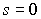
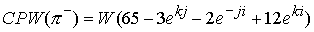

|
В. И. ЕЛИСЕЕВ ВВЕДЕНИЕ В МЕТОДЫ ТЕОРИИ
ФУНКЦИЙ ПРОСТРАНСТВЕННОГО КОМПЛЕКСНОГО ПЕРЕМЕННОГО |
|
8.9. Вычисление масс микрочастиц по кварковым композициям и модам распада. Вычисление квантовых чисел микрочастиц, исследование связи спина, изоспина, четности с величиной массы микрочастицы. Реализация квантовой СРТ-теоремы. Исследование закона не сохранения четности.
В общем виде микрочастица имеет суммарное глюонное поле в виде четырех составляющих из произведений единичных зарядовых глюонных полей на весовые коэффициенты.
, где весовые коэффициенты вычисляются из кварковых композиций микрочастиц, принятых в классификации микрочастиц.
В основу классификации положена теория кварков, претендующих в настоящее время на предельные фундаментальные частицы. Глюонное поле кварков описывается также этой формулой. Для микрочастиц весовые коэффициенты вычисляются по известным кварковым композициям или по модам распада микрочастиц. Для примера, разберем в общем виде кварковую композицию из двух кварков (соответствует мезонам). Даны
Суммарное глюонное поле этих двух условных кварков запишется в виде:
Структура глюонного поля будет зависеть от сумм весовых коэффициентов:
При
отсутствует в структуре электрическая составляющая глюонного поля в явном виде и как показали дальнейшие вычисления изоспин в этом случае зависит от наличия в комбинации глюонного поля коэффициентов , которые содержат скомпенсированные электрические и лептонные поля. Количество скомпенсированных полей выражается весовыми коэффициентами нейтрального пиона. В свою очередь количество этих коэффициентов определяет заряды . Согласно разобранным моделям структуризации пространства возможны бесконечные варианта композиций типа, а также и так далее (где -количество одноименного заряда) в одной кварковой композиции микрочастицы.
При отсутствует лептонная составляющая глюонного поля тоже в явном виде и спин .
Возможны реализации одновременно этих двух вариантов. Отрицательная четность соответствует когда реализовано любое из этих условий.
Эти рассуждения относятся к любому числу кварков в композиции микрочастицы.
Если не одно из этих условий не выполняется, то имеем положительную четность микрочастицы спин
, изоспин ,
,
Где
- весовой коэффициент лептонного поля частицы,- весовой коэффициент лептонного поля кварка  , или кварка
, или кварка  .
.
, где сумма всех отрицательных и положительных зарядов, имеющих разное количество скомпенсированных электрических и лептонных поле в составе микрочастицы, -весовой коэффициент электрической составляющей глюонного поля, -весовой коэффициент электрического поля кварка  или кварка
или кварка  .
.
Вычисления показали жесткую связь между квантовыми числами микрочастицы и ее массой. Так как весовой коэффициент спина исходного кварка
Квантовые числа, вычисленные по формулам, для кварковых композиций, заданных современной классификацией микрочастиц, определяют структуру глюонного поля и массу микрочастицы в пределах 8 % относительно экспериментальной в большинстве случаев.
Исследовано 26 барионов и 19 мезонов.
На рис 84, 85, 86, 87 представлены изоспиновые диаграммы различных вариантов глюонного поля микрочастицы без учета изоспина задаваемого скомпенсированными полями.
Кварк
Кварки были получены при исследовании моделей микрочастиц. В нейтральном пионе имеем скомпенсированные электрические и лептонные поля. Поэтому при замене зарядов глюонных полей на противоположные происходит замена знака весовых коэффициентов получаем из кварка антикварк но с противоположными зарядами (и наоборот). Поясним это системой
СРТак как единичные глюонные поля являются неизвестными для двух одинаковых систем линейных уравнений, то в результате имеем равенство
Рис84. Изоспиновые диаграммы сложения электрических и лептонных составляющих глюонного поля микрочастицы при b>0,C>0.
Диаграмма для античастицы будет для этого случая соответствовать рис 87. На диаграмме представлено два варианта сложения составляющих глюонных полей сопряженных по знаку, без изменения знака весовых коэффициентов (С-вариант). Рис 87 представляет СР вариант.
Рис 85. Изоспиновые диаграммы сложения электрических и лептонных полей для глюонного поля
при b>0, C>0 Диаграммой для античастицы для этого варианта будет рис 86 (СР-вариант).Рис 86. Изоспиновая диаграмма сложения электрических и лептонных полей глюонного поля
Обозначим выявленную симметрию за
. Таким образом, в вычисления масс частиц и их глюонных полей заложены три симметрии. Симметрия С (операция зарядового сопряжения) ,симметрия Р (зеркальное отражение), симметрия W (независимость энергии единичного вихря от его заряда). Вычисления показали, что эти симметрии согласуются с СРТ -теоремой Людерса-Паули. Следствием теоремы СРТ является равенство масс, спина и времени жизни для частиц и античастиц. Так как, вычисление масс частиц идет через глюонные поля, выраженные через единичные вихри и коэффициенты, то симметрия W является необходимым условием для выполнения равенства масс частиц и античастиц.Рис 87. Изоспиновая диаграмма сложения электрического и лептонного поля микрочастицы
(при b>0,c>0).В силу предложенной структуры кварков, антикварков частиц и античастиц как кварковых композиций теорема СР
W является реализацией СРТ теоремы на более детальном уровне. Изменение заряда (операция С-сопряжения) единичного вихря в глюонном поле вызывает изменение знака весового коэффициента (Р-инверсию) и величину первого (как мы его называем вещественного) коэффициента. Применив дополнительно W -симметрию переводим частицу в античастицу с соблюдением квантовых чисел и величин масс.Например
Нейтральный пион
. В весовых коэффициентах глюонное поле нейтрального пиона имеет вид
. Вычисления дают массу Мэв. Расхождение составляет 3,496 %. Расхождение довольно низкое, однако его можно откорректировать за счет первого члена глюонного поля
 . Вычисления дают массу
. Вычисления дают массу
Мэв. Расхождение составляет 0,4 %. Однако, если учесть значение изоспина нейтрального пиона, то его коррекцию необходимо произвести по второму члену глюонного поля
 . Вычисления дают массу частицы
. Вычисления дают массу частицы
Мэв. Расхождение составляет 0,17 %. Глюонное поле нейтрона принимаем в последней корректировке, ибо оно дает спин
ввиду отсутствия лептонного глюонного поля, и изоспин , ввиду наличия электрической составляющей глюонного поля.
Глюонное поле положительного пиона входило в систему расчета единичных зарядовых глюонных полей, поэтому необходимо принять и зависимость квантовых чисел от величин весовых коэффициентов. .
. Вычисления дают массу пиона
Мэв. Расхождение составляет 0,462 %. Расхождение с массой положительного пиона составляет 0,492 %. Величина глюонного поля дает изменение массы микрочастицы
0,099 Мэв, дает изменение массы частицы 0,045Мэв. Эти величины соизмеримы с технической точностью измерения масс микрочастиц. Для вывода о величине спина или изоспина также могут не учитываться. Поэтому спин пионов принят равным нулю, изоспин единице. Продемонстрируем выполнение CPW -теоремы.
Применим W симметрию.
=
Далее рассмотрим мезоны.
Микрочастица
 , , это дает массу Мэв
, , это дает массу Мэв
Расхождение составляет 0,05 %. (для вычисления глюонного поля принято глюонное поле нейтрального пиона с корректировкой первого члена, для определенности формулировки спина и изоспина микрочастиц). Спин и изоспин частицы  равны 0, частица имеет отрицательную четность.
равны 0, частица имеет отрицательную четность.  .
.
Микрочастица
имеет кварковую композицию . Глюонное поле выразится в виде.Вычисления дают массу микрочастицы Мэв.
Расхождение составляет 27 %. Однако спин и изоспин соответстьвуют экспериментальным
 . В дальнейшем массу можно откорректировать по моде распада.
. В дальнейшем массу можно откорректировать по моде распада.
Глюонное поле микрочастицы  определяется кварковой композицией , однако кварк
определяется кварковой композицией , однако кварк  должен быть заменен на кварк ,где осуществлен поворот лептонного поля, а кварк
должен быть заменен на кварк ,где осуществлен поворот лептонного поля, а кварк  заменить на кварк
заменить на кварк
 . Таким образом, будем иметь
. Таким образом, будем иметь
, Вычисление массы дает
Мэв. Расхождение составляет 26 %.
Изотопическая диаграмма соответствует рис 9,3 при положительной четности, квантовые числа равны
Микрочастица
имеет кварковую композицию , которая дает моду распада . В весовых коэффициентах глюонное поле имеет вид. Вычисления дают массу частицы
Мэв. Расхождение составляет 0,5 %.
Глюонное поле включает поворот лептонного поля в кварке u и лептонного поля в кварке d.
Квантовые числа равны
.Микрочастица
имеет кварковую композицию , которая дает моду распалаВ точном соответствии с модой распада. Кварковая композиция дает возможность вычисления весовых коэффициентов глюонного поля частицы, которые должны учитывать квантовые числа микрочастицы
. Таким образом, необходимо кварк заменить на кварк, в котором лептонная составляющая глюонного поля повернута на 180гр. и поэтому в кварковой композиции микрочастицы аннигилирует. Так, что глюонное поле микрочастицы равно
. Это дает массу микрочастицы
Мэв. Расхождение составляет 5.8 %. Квантовые числа соответствуют экспериментальным. Спин равен .Изоспин равен .
Далее по разработанной схеме вычислим массу микрочастиц
Моды распада точно не зафиксированы. Рассмотрим для примера распад
в точном соответствии с модой распада. Глюонное поле вычисляется по выражению
. Вычисленная масса микрочастицы равна
Мэв. Расхождение составляет 11,1 %. Спин равен нулю вследствии малости весового коэффициента перед лептонной составляющей. Изоспин равен нулю вследствии малости удельного веса в массе элекирической составляющей глюонного поля, а также противоположных знаков зарядов . В точном соответствии сэкспериментальными данными.
Мини оглавление:
[0], [1.1.1, 1.1.2, 1.1.3, 1.1.4, 1.1.5, 1.1.6, 1.1.7, 1.1.8, 1.2, 1.2.1, 1.2.2, 1.2.2.a, 1.2.2.b, 1.2.2.c, 1.2.2.d, 1.2.2.e, 1.2.2.f, 1.2.2.g, 1.2.2.h, 1.2.3, 1.3.1, 1.3.2, 1.3.3, 1.3.4, 1.3.5, 1.3.6, 1.4.1, 1.4.2, 1.5, 1.6, 1.7.1, 1.7.2, 1.7.3.1, 1.7.3.2, 1.7.3.3, 1.7.4.1, 1.7.4.2, 1.8.1], [2.1, 2.2],[3.1, 3.2, 3.3, 3.4.1, 3.4.2, 3.4.3, 3.4.4, 3.4.5],[4.1, 4.2, 4.3, 4.4],[5.1, 5.1.Рис.52, 5.2, 5.3, 5.4, 5.4.Т1, 5.4.Т2, 5.4.Т3, 5.5.1, 5.5.2, 5.5.3, 5.5.4],[6.1.1, 6.1.2, 6.2.1, 6.2.2, 6.2.3, 6.2.4, 6.2.5, 6.3, 6.4.1, 6.4.2, 6.5.1, 6.5.2],[7.1, 7.2, 7.3, 7.4, 7.5, 7.6, 7.7.1, 7.7.2, 7.8.1, 7.8.2, 7.8.3, 7.9],[8.1, 8.2.1, 8.2.2, 8.3, 8.4, 8.5, 8.6, 8.6.T1, 8.7, 8.8.1, 8.8.2, 8.8.3, 8.9.1, 8.9.2, 8.9.3, 8.10, 8.10.T2, 8.10.T3],[9.1, 9.2, 9.3, Рис.88, 89, 90, 91, 92, 93, 94, 95, 96, 97, 98, 99, 100],[10.1, 10.2, 10.3, 10.4, 10.5, 10.6, 10.7, 10.8, 10.9, 10.10, 10.11, 10.12, 10.13, 10.14, 10.15.1, 10.15.2, 10.16.1, 10.16.2, 10.17, 10.18],[11]
Размещенный материал является электронной версией книги: © В.И.Елисеев, "Введение в методы теории функций пространственного комплексного переменного", изданной Центром научно-технического творчества молодежи Алгоритм. - М.:, НИАТ. - 1990. Шифр Д7-90/83308. в каталоге Государственной публичной научно-технической библиотеки. Сайт действует с 10 августа 1998.
E-mail: mathsru@gmail.com